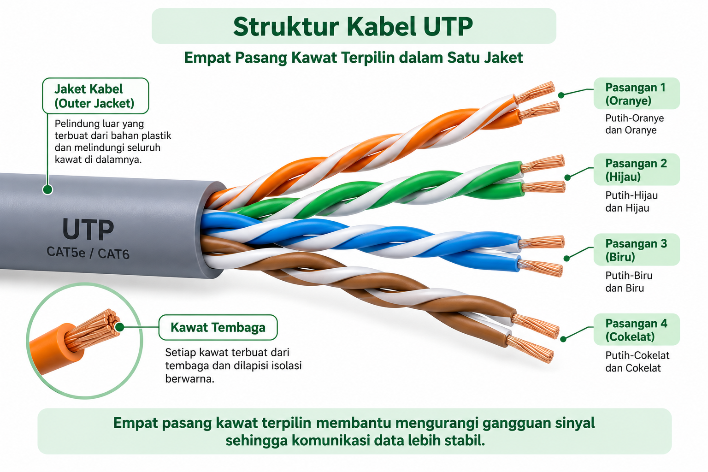
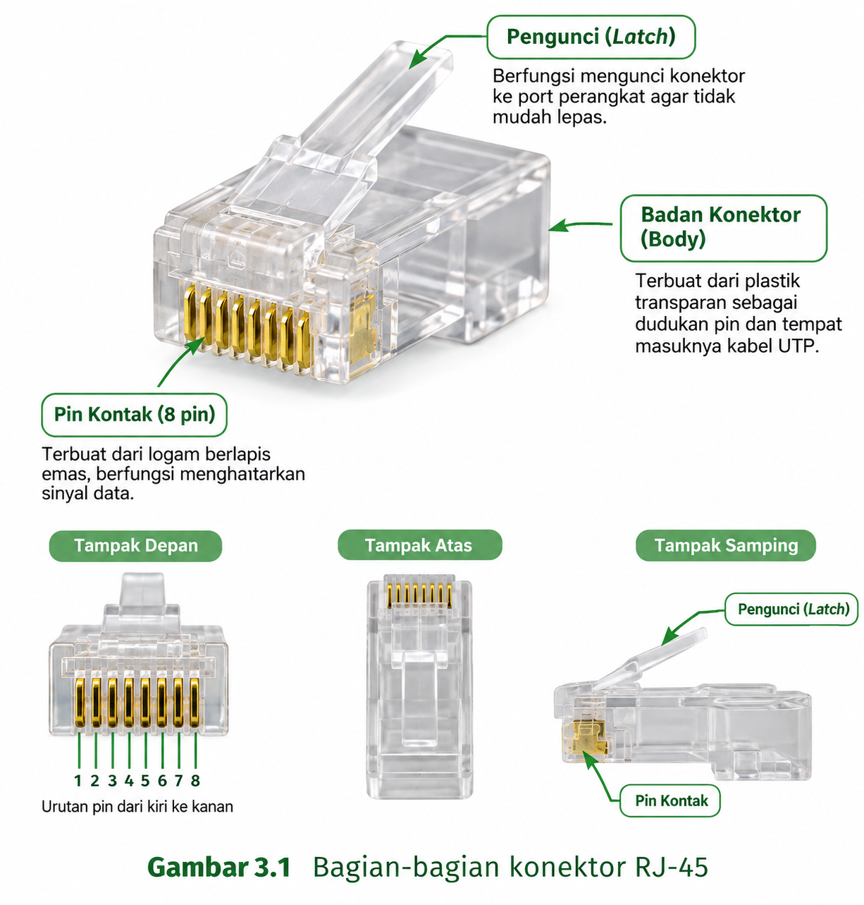

Mengingat Kembali RJ-45, Kabel UTP, Alat, dan K3
Pertemuan 1 · Alokasi Waktu 3 JP
Tujuan Pembelajaran Bab Ini
- Peserta didik mampu mengenali kembali kabel UTP, konektor RJ-45, dan tang crimping beserta fungsinya.
- Peserta didik mampu menerapkan prosedur K3 sebelum melakukan praktik pemasangan.
1.1 Dari Teori Menuju Praktik
Pada Buku Ajar TP 7, kalian telah mempelajari secara mendalam tentang kabel UTP (struktur, kategori, jenis straight dan crossover), konektor RJ-45 (bagian-bagian dan standar susunan warna), tang crimping dan LAN tester (fungsi dan cara kerja), serta prosedur Keselamatan dan Kesehatan Kerja (K3). Bab pertama TP 8 ini akan mengajak kalian mengingat kembali seluruh pengetahuan tersebut secara ringkas, sebagai bekal sebelum benar-benar memegang alat dan bahan untuk praktik.
Mengapa perlu mengingat kembali? Karena pada praktik pemasangan konektor, kalian tidak lagi hanya membaca dan memahami, tetapi harus benar-benar mengingat dengan cepat dan tepat setiap kali tangan kalian bekerja. Seorang teknisi yang baik tidak perlu membuka buku catatan setiap kali ingin memasang satu kabel; ia sudah menghafal dan memahami setiap langkahnya di luar kepala.
1.2 Ringkasan Kabel UTP
Kabel UTP (Unshielded Twisted Pair) adalah kabel yang tersusun dari delapan kawat tembaga kecil, membentuk empat pasang yang saling dipilin, dan seluruhnya dibungkus oleh satu lapisan jaket pelindung luar. Empat pasang tersebut adalah pasangan oranye, hijau, biru, dan cokelat, masing-masing memiliki versi warna solid dan versi "putih-"-nya.

1.3 Ringkasan Konektor RJ-45
RJ-45 (Registered Jack 45) adalah konektor standar yang menghubungkan kabel UTP ke port jaringan Ethernet. Konektor ini memiliki empat bagian utama: rumah konektor (housing) yang transparan, delapan pin kontak logam di bagian atas, lubang masuk kabel di bagian belakang, dan pengunci (locking clip) di bagian bawah.

1.4 Ringkasan Tang Crimping
Tang crimping adalah alat dengan tiga fungsi dalam satu alat: memotong (cutter) untuk memotong dan meratakan kabel, mengupas (stripper) untuk membuka jaket luar kabel, dan mengepres (crimper) untuk menekan konektor RJ-45 agar pin-pinnya menembus dan mengunci kawat di dalamnya. Ketiga fungsi ini akan kalian gunakan secara berurutan sepanjang praktik TP 8.
1.5 Mengingat Kembali Prosedur K3
Sebelum praktik dimulai, seluruh peserta didik wajib mengingat dan menerapkan prosedur K3 yang telah dipelajari pada TP 7. Berikut adalah lima prosedur yang paling penting untuk diterapkan khusus selama praktik pemasangan konektor RJ-45.
- Gunakan tang crimping hanya untuk memotong, mengupas, dan mengepres, tidak untuk keperluan lain.
- Jangan bercanda atau bermain-main saat memegang tang crimping, karena bagian pemotongnya tajam.
- Arahkan bagian pemotong menjauh dari tubuh sendiri maupun teman saat digunakan.
- Kerjakan setiap langkah dengan tenang, tidak tergesa-gesa, terutama saat proses crimping yang tidak dapat diulang.
- Kembalikan alat ke tempatnya dan bersihkan sisa potongan kabel setelah selesai berlatih.
1.6 Kegiatan Peserta Didik — LKPD 1.1
Petunjuk LKPD 1.1
Bekerja berpasangan dengan teman sebangku. Amati kabel UTP, konektor RJ-45, dan tang crimping yang ditunjukkan guru (tanpa melakukan crimping terlebih dahulu).
Lengkapi tabel berikut, kemudian praktikkan cara memegang tang crimping dengan benar secara bergantian.
| Alat/Bahan | Fungsi | Kondisi (Baik/Rusak) | Cara Penggunaan yang Aman |
|---|---|---|---|
| Kabel UTP | |||
| Konektor RJ-45 | |||
| Tang crimping | |||
| LAN tester |
Catatan hasil pengamatan:
Rangkuman Bab 1
- Kabel UTP tersusun dari delapan kawat (empat pasang terpilin) dalam satu jaket pelindung.
- Konektor RJ-45 memiliki empat bagian: rumah konektor, delapan pin kontak, lubang masuk kabel, dan pengunci.
- Tang crimping memiliki tiga fungsi: memotong, mengupas, dan mengepres konektor.
- Prosedur K3 wajib diterapkan sejak awal hingga akhir praktik, terutama saat menggunakan tang crimping.
Latihan Soal Bab 1
- Sebutkan empat pasang warna kawat pada kabel UTP!
- Sebutkan empat bagian utama konektor RJ-45!
- Sebutkan tiga fungsi tang crimping dalam satu alat!
- Mengapa K3 harus diingat kembali sebelum memulai praktik, meskipun sudah dipelajari pada TP 7?
- Sebutkan tiga prosedur K3 yang paling penting saat menggunakan tang crimping!
Refleksi Pertemuan 1
- Apa fungsi RJ-45 yang saya ingat?
- Apa fungsi tang crimping yang saya ingat?
- Mengapa K3 penting sebelum praktik dimulai?
- Bagian mana yang masih belum saya pahami?